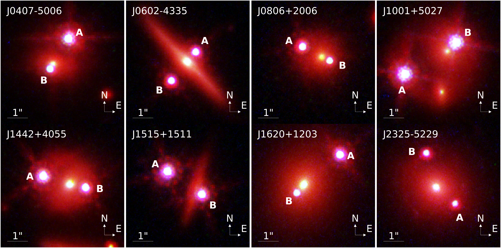
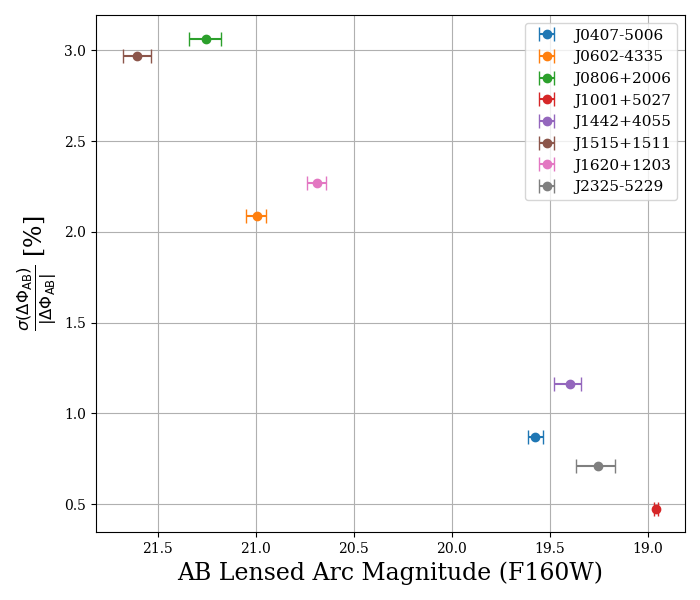

Personal website of Ryan Brady
Measuring the Hubble Constant
Despite the successes of ΛCDM in explaining a wide range of cosmological observations, a persistent and statistically significant discrepancy has appeared in recent years between measurements of the Hubble constant (H0) derived from observations of the early Universe and those from the local Universe. Time-delay cosmography (TDC) of strongly lensed quasars has emerged as an independent and complementary method for determining H0 that circumvents many of the systematics inherent in other techniques. First proposed by Refsdal 1964, this method relies on the fact that multiple images of a background quasar, lensed by a foreground galaxy, arrive at the observer at different times due to differences in both the geometric path length and the gravitational potential traversed by the light rays. By accurately measuring the time delays between the lensed images and modeling the mass distribution of the lens, one can infer the so-called time-delay distance, which is inversely proportional to H0.
To improve upon the precision of TDC and to further probe systematics, the TDCOSMO collaboration was formed. The most recent muli-system analysis presented in the TDCOSMO 2025 Milestone found H0 = 71.6+3.9−3.3 km s−1 Mpc−1 for the time-delay sample combined with Pantheon+ supernovae constraints in flat ΛCDM. Other TDCOSMO analyses on individual lensing systems (e.g. Wong et al. 2024 , Paic et al. 2026 ) reinforce the observed tension and emphasize the potential for time-delay cosmography to arbitrate between the competing measurements of H0 and to probe possible extensions to the standard cosmological model. My work therefore aims to obtain a percent-precision measurement of H0 using doubly imaged quasars, which are ~4x more common than quads in the Universe.

Composite red-green-blue (RGB) images of the eight doubly imaged quasars in the HST-GO-17199 dataset. Each figure presents an image constructed from the HST observations, with F160W data mapped to the red channel, F814W data to the green channel, and F475X data to the blue channel.
Modeling Doubly Imaged Quasars
Brady et al. (2026) presents the first uniform gravitational lens modeling analysis of eight doubly imaged quasars from multi-band observations with the Hubble Space Telescope. In this work, we find a statistically significant correlation between modeling precision and the surface brightness of the spatially extended host arcs, establishing that arc surface brightness determines the degree to which the lens mass profile can be constrained in doubly imaged systems. As large imaging surveys expand the known population of doubly imaged systems, the development of uniform modeling pipelines will be necessary for incorporating them into population analyses aimed at constraining the Hubble constant. Our results demonstrate that, when high resolution imaging resolves the extended host galaxy arcs, doubly imaged systems can yield precise mass models suitable for such cosmographic inferences.

Comparison of Fermat potential precision with calculated AB Lensed Arc Magnitude. Each point correlates to an individual system, with the horizontal error bars denoting the uncertainty in the modeled arc magnitude. The observed trend between arc brightness and Fermat potential precision demonstrates that improved arc brightness directly translates into tighter constraints on the Fermat potential, and therefore on cosmological inferences that utilize time delays.